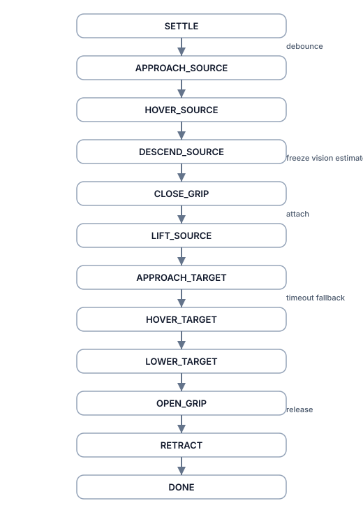

The Challenge
The Lucky Robots G1 Pick-and-Place Challenge asked for a red cylinder to be moved from a source table to a target table using the Unitree G1 humanoid in MuJoCo. The original repository shipped a manual keyboard-controlled demo with walker and reacher ONNX policies, a full robot model, a configured scene, and multi-camera visibility. The task here was to turn that demo into an autonomous baseline without hiding where the system still fails.
The result is a modular controller: an explicit finite-state machine, a kinematic grasp backend, and a lightweight Visual Oracle for source localization. It is intentionally a baseline—not a production-ready stack—but it is structured for debugging and incremental upgrades.
Why It Is Hard
- Humanoid locomotion and manipulation must be coordinated concurrently, not staged.
- The reacher expects pelvis-frame targets, so world-frame goals require careful transforms.
- Learned policies have narrow operating envelopes and drift under small distribution shifts.
- Grasping is contact-rich, and fingertip alignment matters more than global pose accuracy.
- Perception timing interacts with gait, causing jitter or occlusion at the worst moments.
System Decomposition
The baseline is decomposed into narrow, testable modules so each subsystem can be tuned in isolation while still supporting end-to-end runs. Each module exposes explicit logs and thresholds for repeatable debugging.
Perception
Depth + segmentation back-projection to recover a source-side object pose.
Locomotion
ONNX walker policy handles coarse navigation and stance stability.
Manipulation
ONNX right reacher overlays arm motion while the walker continues to step.
Grasp
Kinematic attachment backend for deterministic pickup and release.
Sequencing
Finite-state machine coordinates phases, checks, and timeouts.
Architecture
The runtime keeps policy logic separate from control plumbing so each layer can be instrumented independently. The core flow is intentionally simple: orchestration, policy decisions, control synthesis, and simulation feedback.
- run.py as the runtime orchestrator and entry point.
- common/controller.py as the walker/reacher controller layer.
- common/grasp.py as the kinematic grasp backend.
- policies/fsm_core.py for the baseline state machine.
- policies/fsm_visual_oracle.py for the vision-augmented extension.
- vision/geometry.py and vision/observer.py for perception.

FSM Baseline
The first autonomous version used an explicit finite-state machine so each phase could be tuned independently. The state ordering also makes timeouts and fallback paths visible during debugging.
SETTLE APPROACH_SOURCE HOVER_SOURCE DESCEND_SOURCE CLOSE_GRIP LIFT_SOURCE APPROACH_TARGET HOVER_TARGET LOWER_TARGET OPEN_GRIP RETRACT DONE
FSMs were selected over end-to-end RL because they make locomotion, perception, and grasping failures separable and traceable within a short development cycle.

Visual Oracle
The baseline started with a ground-truth lookup to validate motion control. The Visual Oracle replaces that lookup by estimating the cylinder pose from RGB segmentation and depth back-projection, then smoothing the estimate with an EMA.
The estimator is deliberately lightweight and deterministic; it is not a learned detector. The pose is frozen during descent and close-grip phases to avoid self-occlusion jitter.

Key Engineering Lessons
The Normalization Trap
The walker ONNX policy already applied internal normalization. Adding external normalization double-normalized observations, destabilized the gait, and caused hard-to-trace drift.
The Always-On Reacher
The walker observes arm joint positions, so the right reacher had to run unconditionally. Keeping the arm in a known carry pose prevented out-of-distribution walking behavior.
The Reacher Accuracy Floor
The right reacher had a practical accuracy floor of ~12 cm. Grasp thresholds and timeout fallbacks were tuned around that floor instead of assuming perfect convergence.
The Asymptotic Turn-Rate Problem
Target-side navigation required empirical tuning because the walker’s effective angular response slowed as it aligned with the desired heading, stretching approach time.
The Visual Oracle Freeze
The vision estimate was frozen during descent and close-grip phases to avoid self-occlusion jitter and preserve a consistent grasp target.
Results
The milestones below summarize what the autonomous baseline reliably demonstrated in simulation. Evidence comes from logs, overlay traces, and recorded runs.
| Milestone | What it demonstrated | Outcome | Caveat |
|---|---|---|---|
| Headless smoke test | Core loop boots, policies load, and telemetry streams. | Stable initialization with repeatable logs and captures. | Manual inspection only. |
| Source approach | Walker can align with the source table pose. | Reached approach corridor with consistent yaw control. | Turn-in slows near alignment. |
| Hover and descend | Reacher can hold a stable hover and descend window. | Hand stabilized above the cylinder with tuned thresholds. | Sensitive to perception jitter. |
| Kinematic grasp | Attachment backend triggers on alignment. | Object attaches consistently at the close-grip window. | Not a physical grasp. |
| Source lift | FSM clears the object from the table safely. | Lifted with repeatable clearance margins. | Depends on carry pose stability. |
| Target transport | Walker carries the object across the scene. | Consistent transport with the arm in carry pose. | Sway during gait transitions. |
| Placement and release | Release sequence opens the gripper and detaches. | Object released above the target surface. | Drop height is conservative. |
| Visual Oracle source localization | Vision pipeline replaces the ground-truth lookup. | EMA-smoothed pose drives source-side reach targets. | Occlusion cases remain brittle. |
Limitations
- The baseline is a modular controller, not a production-ready robotics stack.
- Kinematic grasping is a shortcut that hides contact dynamics.
- The Visual Oracle is deterministic and is not a learned detector.
- Target-side alignment still relies on empirical tuning.
- On-table checks still need robust post-settle validation.
- The wrist camera is not fully exploited yet.
- Sim-to-real transfer will require additional work and validation.
Next Steps
- Introduce a learned detector (for example, YOLO) for object localization.
- Apply domain randomization and sensor noise for robustness.
- Add contact-aware grasping, slip detection, and physical release checks.
- Refine target-side navigation for tighter placement accuracy.
- Include post-DONE settling checks to validate success criteria.
- Expand dashboards for timing, failure recovery, and pose drift.
- Publish a demo video alongside the case study.